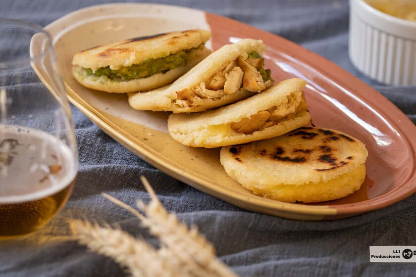

Arepas

Go back to homepage
Where do arepas come from?
Arepas are a traditional food typical Venezuela and Colombia. They're stuffed cornmeal cakes that are crispy and fluffy
Ingredients
- Pre-cooked white corn flour
- Cold water
- Salt teaspoon dessert
- Crallado cheese for the filling
- Colded chicken breast for the filling
- Small avocado for the filling
Steps
- mix corn flour, water and salt
- we make six equal balls in size
- work them with our hands and flatten them delicately
- we cook them in a nonstick pan, with olive oil about six minutes
- we make a cut on one side and fill it to taste with the mixture of ingredients: cheese, chicken and avocado crushed with a fork